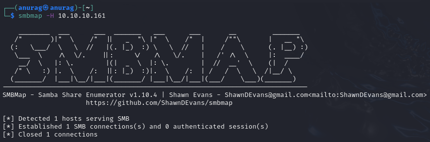

Port 445
SMB - TCP 445
Neither smbmap nor smbclient will allow me to list shares without a password:

RPC - TCP 445
I’ll connect with null auth:

I can get a list of users with enumdomusers:

I can list the groups too:

I can also look at a group for its members. For example, the Domain Admins group has one member, rid 0x1f4:

That's the Administrator account: